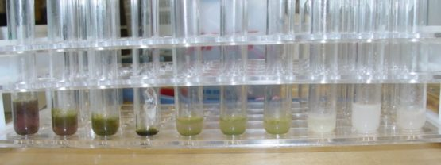
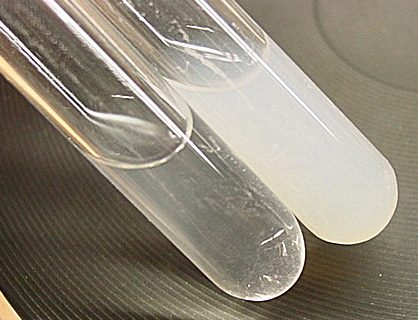

1) Calculate the amount of water needed to dissolve the Perchlorate at 100°C; use 50% more water. 200 grams of Potassium Perchlorate would require 1.5 liters. Heat, but do not quite boil, the Potassium Perchlorate solution until all of the Perchlorate has dissolved.
2) Prepare a solution that contains 10% by weight Potassium Metabisulfite, relative to the amount of Perchlorate you wish to clean. In other words, if you have 500 grams of Perchlorate, start with 50 grams of Potassium Metabisulfite. This is cheaply obtained from home brew shops, and similar.
3) Add enough HCl to gently acidify the Perchlorate solution, perhaps 15 drops per liter. Using a pipette, and with stirring, gradually add 1/2 of the Potassium Metabisulfite solution to the Perchlorate. Allow it to stand for several minutes with continued stirring. Test the solution for Chlorate. If still dirty, add additional metabisulfite.
4) Once clean, the solution needs to be neutralized, or made very slightly basic. The caustic of choice is KOH. Since the reduction byproducts are acidic, it requires more base on a Normal basis than the initial added HCl would indicate. Slowly add saturated KOH, dropwise, to the solution, and test with pH paper or a probe. When nearing neutral, it doesn't take much additional base to overshoot, so use caution. If you make it too basic, add a drop or two of HCl to bring it back to neutral. The picutre shows a series of N-Phenylanthranilic acid tests that demonstrate the point at which the Perchlorate was free of all Chlorate contamination.

5) Boil the solution down until the quantity of water is equivalent to the necessary mass of water for the amount of Perchlorate used. Potassium Perchlorate dissolves at a rate of 200 to 220 grams per liter at 100°C. An easy way to do this is to boil down until the very first crystals appear, and from there, allow it to first slowly cool to room temp, then refrigerate. Harvest the Perchlorate by the usual means (decant + filtration) when the solution is at approximately 5°C. Remaining Potassium Chloride and Potassium Sulfate remain dissolved, and are discarded. Wash the Perchlorate with ice water and then cold Ethanol. Spread the Perchlorate out to dry, then ball mill to the desired consistency.

The tests for Chloride consisted of
1) A Hach chloride titration strip - zero.
2) Several drops of strong Silver Nitrate. The sample remained clear. The Silver Nitrate test is sensitive, and yielded a nearly opaque white from tap water. The two are shown side by side, Perchlorate on the left, tap water on the right, with added Silver Nitrate. The white coloration in the left test tube is reflection from the right test tube on a black background. The solution is quite clear showing no Chloride.
Next, Sulfate.
Saturated Lead Nitrate was added to another sample. Insoluble Lead Sulphate should form if there was significant Potassium Sulfate in the Perchlorate. Again, I noticed zero precipitation; the solution remained clear and bright.
If there is any Sulfate in there, it is low enough to ignore.
HIT THE BACK BUTTON ON YOUR BROWSER